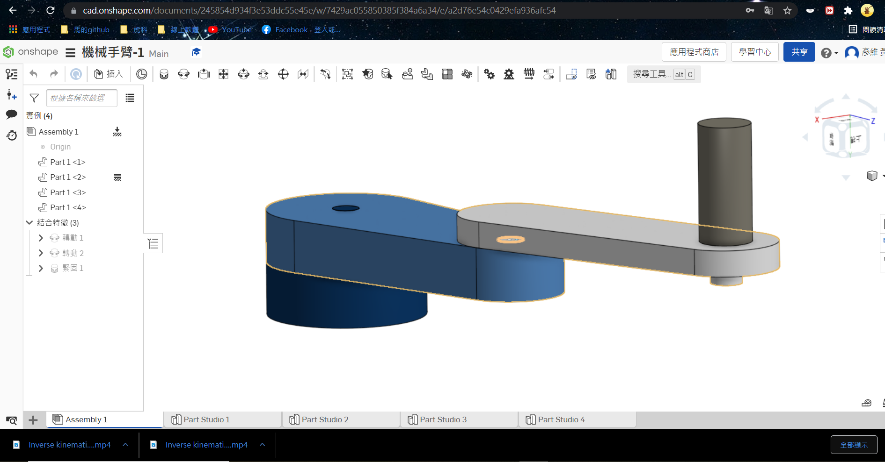

W15 <<
Previous W16
項目1.在Onshape軟體上繪製機械手臂:

我教大家如何使用Onshape這套繪圖軟體，並順便演示我畫的機械手臂
圖檔網址:
https://cad.onshape.com/documents/245854d934f3e53ddc55e45e/w/7429ac055850385f384a6a34/e/2498383dcd6ff0730daebedd
這是我的零組件下載點(40823220繪製)
W16零件STL檔(想要STL檔點這裡)
項目2.建立 CoppeliaSim 4.1.0 MTB robot 場景
影片:
Google Drive:
Leo檔:
(參考老師提供的程式)藉由鍵盤按鍵來控制Robot角度
if (auxiliaryData[1]==114) then --r right turn in degree
-- if key r pressed axis1 angle adds 5 degrees
rotation1 = rotation1 + 5*deg
sim.setJointPosition(axis1, rotation1)
end -- if r
if (auxiliaryData[1]==108) then --l left turn in degree
-- if key l pressed axis1 angle substract 5 degrees
rotation1 = rotation1 - 5*deg
sim.setJointPosition(axis1, rotation1)
end -- if l
if (auxiliaryData[1]==100) then --d suction pad down
-- if key d pressed axis3 will down 0.01 m plus calibration
distance3 = distance3 + 0.01 + calibration
sim.setJointPosition(axis3, distance3)
end -- if d
if (auxiliaryData[1]==117) then --u suction pad up
-- if key u pressed axis3 will up 0.01 m minus calibration
-- 吸盤往下升 1 公分加上校正值
distance3 = distance3 - 0.01 - calibration
sim.setJointPosition(axis3, distance3)
end -- if u
項目3.手臂末端加入 components-gripper-suction pad 吸盤
裡面的驅動程式:
1.因為我的機子比較大所以我的吸盤軸下降高度，我改為-0.085m
2.為了讓他跑迴圈我在中間加了while sim......
function moving(x,y)
a=0.4
b=0.4
c=math.pow((math.pow(x,2)+math.pow(y,2)),0.5)
s=(a+b+c)/2
area=math.pow((s*(s-a)*(s-b)*(s-c)),0.5)
h=area/(2*c)
deg1_base=math.atan(x/y)
if x<0 and y<0 then
deg1_base=deg1_base+math.pi
end
deg1_tri=math.asin(h/a)
deg1=deg1_base+deg1_tri
deg2=math.pi-(0.5*math.pi-deg1_tri)-math.acos(h/b)
deg3=deg2-deg1
print(deg1)
sim.setJointTargetPosition(joint01,deg1)
sim.setJointTargetPosition(joint02,-deg2)
sim.setJointTargetPosition(joint03,deg3)
end
function sysCall_threadmain()
joint01=sim.getObjectHandle('joint1')
joint02=sim.getObjectHandle('joint2')
joint03=sim.getObjectHandle('joint3')
jointz=sim.getObjectHandle('jointz')
sim.setJointTargetPosition(joint01,0)
sim.setJointTargetPosition(joint02,0)
sim.setJointTargetPosition(joint03,0)
sim.setJointTargetPosition(jointz,0)
sim.setIntegerSignal("pad_switch",1)
sim.setJointTargetPosition(jointz,-0.085)
sim.wait(2)
sim.setJointTargetPosition(jointz,0)
while sim.getSimulationState()~=sim.simulation_advancing_abouttostopre do
moving(0.2,0.7)
sim.wait(2)
sim.setIntegerSignal("pad_switch",0)
sim.wait(2)
sim.setIntegerSignal("pad_switch",1)
sim.setJointTargetPosition(jointz,-0.085)
sim.wait(2)
sim.setJointTargetPosition(jointz,0)
sim.wait(2)
moving(-0.3,-0.55)
sim.wait(2)
sim.setIntegerSignal("pad_switch",0)
sim.wait(2)
sim.setIntegerSignal("pad_switch",1)
sim.setJointTargetPosition(jointz,-0.085)
sim.wait(2)
sim.setJointTargetPosition(jointz,0)
sim.wait(2)
end
end
這是吸盤的程式，感謝40823214熱心的指導，讓我能理解並使用他
maxPullForce=sim.getScriptSimulationParameter(sim.handle_self,'maxPullForce')
maxShearForce=sim.getScriptSimulationParameter(sim.handle_self,'maxShearForce')
maxPeelTorque=sim.getScriptSimulationParameter(sim.handle_self,'maxPeelTorque')
sim.setLinkDummy(l,-1)
sim.setObjectParent(l,b,true)
m=sim.getObjectMatrix(l2,-1)
sim.setObjectMatrix(l,-1,m)
end
function sysCall_cleanup()
--this is teach by 40823214
sim.setLinkDummy(l,-1)
sim.setObjectParent(l,b,true)
m=sim.getObjectMatrix(l2,-1)
sim.setObjectMatrix(l,-1,m)
end
function sysCall_sensing()
parent=sim.getObjectParent(l)
--this is teach by 40823214
local sig=sim.getIntegerSignal("pad_switch")
if (not sig) or (sig==0) then
if (parent~=b) then
sim.setLinkDummy(l,-1)
sim.setObjectParent(l,b,true)
m=sim.getObjectMatrix(l2,-1)
sim.setObjectMatrix(l,-1,m)
end
else
if (parent==b) then
index=0
while true do
shape=sim.getObjects(index,sim.object_shape_type)
if (shape==-1) then
break
end
local res,val=sim.getObjectInt32Parameter(shape,sim.shapeintparam_respondable)
if (shape~=b) and (val~=0) and (sim.checkProximitySensor(s,shape)==1) then
-- Ok, we found a respondable shape that was detected
-- We connect to that shape:
-- Make sure the two dummies are initially coincident:
sim.setObjectParent(l,b,true)
m=sim.getObjectMatrix(l2,-1)
sim.setObjectMatrix(l,-1,m)
-- Do the connection:
sim.setObjectParent(l,shape,true)
sim.setLinkDummy(l,l2)
break
end
index=index+1
end
else
-- Here we have an object attached
if (infiniteStrength==false) then
-- We might have to conditionally beak it apart!
result,force,torque=sim.readForceSensor(suctionPadLink) -- Here we read the median value out of 5 values (check the force sensor prop. dialog)
if (result>0) then
breakIt=false
if (force[3]>maxPullForce) then breakIt=true end
sf=math.sqrt(force[1]*force[1]+force[2]*force[2])
if (sf>maxShearForce) then breakIt=true end
if (torque[1]>maxPeelTorque) then breakIt=true end
if (torque[2]>maxPeelTorque) then breakIt=true end
if (breakIt) then
-- We break the link:
sim.setLinkDummy(l,-1)
sim.setObjectParent(l,b,true)
m=sim.getObjectMatrix(l2,-1)
sim.setObjectMatrix(l,-1,m)
end
end
end
end
end
end
項目4.逆向運算學函式
主要程式說明:
joint01=sim.getObjectHandle('joint1')設定軸1
joint02=sim.getObjectHandle('joint2')設定軸2
joint03=sim.getObjectHandle('joint3')設定軸3
jointz=sim.getObjectHandle('jointz')設定方軸
sim.setJointTargetPosition(joint01,0)定位軸1
sim.setJointTargetPosition(joint02,0)定位軸2
sim.setJointTargetPosition(joint03,0)定位軸3
sim.setJointTargetPosition(jointz,0)定位方軸
sim.setIntegerSignal("pad_switch",1)
sim.setJointTargetPosition(jointz,-0.085) 吸盤下降0.085
sim.wait(2)停頓2秒
sim.setJointTargetPosition(jointz,0)
sim.wait(2)
moving(0.2,0.7)以下都是各點要求
sim.wait(2)
sim.setIntegerSignal("pad_switch",0)
sim.wait(2)
sim.setIntegerSignal("pad_switch",1)
sim.wait(2)
sim.setJointTargetPosition(jointz,-0.06)
sim.wait(2)
sim.setJointTargetPosition(jointz,0)
sim.wait(2)
moving(-0.3,-0.55)
sim.wait(5)
sim.setIntegerSignal("pad_switch",0)
sim.wait(2)
sim.setIntegerSignal("pad_switch",1)
sim.wait(2)
sim.setJointTargetPosition(jointz,-0.06)
sim.wait(2)
sim.setJointTargetPosition(jointz,0)
sim.wait(2)
上面有提到過的程式我再補充說明:(試算角度)
a=0.4 調整a.距離為0.4
b=0.4 調整b.距離為0.4
c=math.pow((math.pow(x,2)+math.pow(y,2)),0.5) 角度計算
s=(a+b+c)/2
area=math.pow((s*(s-a)*(s-b)*(s-c)),0.5)
h=area/(2*c)
deg1_base=math.atan(x/y)
if x<0 and y<0 then
deg1_base=deg1_base+math.pi
end
deg1_tri=math.asin(h/a)
deg1=deg1_base+deg1_tri
deg2=math.pi-(0.5*math.pi-deg1_tri)-math.acos(h/b)
deg3=deg2-deg1
sim.setJointTargetPosition(joint01,deg1)
sim.setJointTargetPosition(joint02,-deg2)
sim.setJointTargetPosition(joint03,deg3)
項目5.Python remote API 逆向運動學函式
Python程式說明:
(跟前面的差不多意思，有些地方要改，例如:有些end要記得拿掉、下降高度也要記得改)
import sim as vrep
import math
import random
import time
import math
def moving(x,y):
a=0.4
b=0.4
c=math.pow((math.pow(x,2)+math.pow(y,2)),0.5)
s=(a+b+c)/2
area=math.pow((s*(s-a)*(s-b)*(s-c)),0.5)
h=area/(2*c)
deg1_base=math.atan(x/y)
if x<0 and y<0 :
deg_base1=deg1_base+math.pi
deg1_tri=math.asin(h/a)
deg1=deg1_base+deg1_tri
deg2=math.pi-(0.5*math.pi-deg1_tri)-math.acos(h/b)
deg3=deg2-deg1
vrep.simxSetJointTargetPosition(clientID,joint01,deg1,opmode)
vrep.simxSetJointTargetPosition(clientID,joint02,-deg2,opmode)
vrep.simxSetJointTargetPosition(clientID,joint03,deg3,opmode)
print ('Start')
vrep.simxFinish(-1)
clientID = vrep.simxStart('127.0.0.1', 19997, True, True, 5000, 5)
if clientID != -1:
print ('Connected to remote API server')
res = vrep.simxAddStatusbarMessage(
clientID, "This is teach by 40823214 ",
vrep.simx_opmode_oneshot)
if res not in (vrep.simx_return_ok, vrep.simx_return_novalue_flag):
print("Could not add a message to the status bar.")
opmode = vrep.simx_opmode_oneshot_wait
STREAMING = vrep.simx_opmode_streaming
vrep.simxStartSimulation(clientID, opmode)
ret,joint01=vrep.simxGetObjectHandle(clientID,"joint1",opmode)
ret,joint02=vrep.simxGetObjectHandle(clientID,"joint2",opmode)
ret,joint03=vrep.simxGetObjectHandle(clientID,"joint3",opmode)
ret,jointz=vrep.simxGetObjectHandle(clientID,"jointz",opmode)
vrep.simxSetJointTargetPosition(clientID,joint01,0,opmode)
vrep.simxSetJointTargetPosition(clientID,joint02,0,opmode)
vrep.simxSetJointTargetPosition(clientID,joint03,0,opmode)
vrep.simxSetIntegerSignal(clientID,"pad_switch",1,opmode)
vrep.simxSetJointTargetPosition(clientID,jointz,-0.085,opmode)
time.sleep(1)
vrep.simxSetJointTargetPosition(clientID,jointz,0,opmode)
while True:
moving(0.2,0.7)
time.sleep(1)
vrep.simxSetIntegerSignal(clientID,"pad_switch",0,opmode)
time.sleep(1)
vrep.simxSetIntegerSignal(clientID,"pad_switch",1,opmode)
vrep.simxSetJointTargetPosition(clientID,jointz,-0.085,opmode)
time.sleep(1)
vrep.simxSetJointTargetPosition(clientID,jointz,0,opmode)
moving(-0.3,-0.55)
time.sleep(1)
vrep.simxSetIntegerSignal(clientID,"pad_switch",0,opmode)
time.sleep(1)
vrep.simxSetIntegerSignal(clientID,"pad_switch",1,opmode)
vrep.simxSetJointTargetPosition(clientID,jointz,-0.085,opmode)
time.sleep(1)
vrep.simxSetJointTargetPosition(clientID,jointz,0,opmode)
心得:
我只想說對於我這個初學者而言，要在短時間內，弄熟Onshape、Coppeliasim這兩套軟體，難度有點高，重點是還要搭配程式，這真的是個艱難的挑戰，雖然我沒有做得很完整，但至少有個樣子了，我能做到這樣，最大功臣是40823214同學的協助，我一直問，他就一直教，真的很棒。總之，期末這項作業，我學到了很多，我也真的是盡力了。
參與40823214的30人協同的教學影片:
W15 <<
Previous